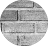

Standard
Premium
Custom
Black Standard
Brown Standard
Brushed Nickel Standard
Ebony
Dark Roast
Ivory
Retro Grey Stucco

Vintage Brick
Old School Mix
Urban Loft
Stack Ledge Rock
Walnut Plank
White Washed Plank
Mocha Slate
White Harringbone